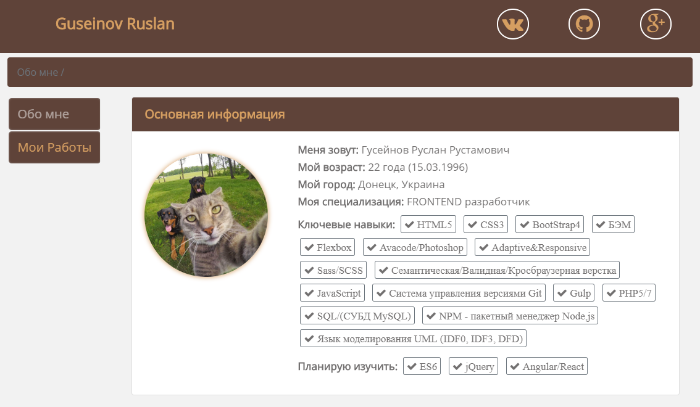

Обзор шаблона «Portfolio»

Шаблон "Portfolio" был разработан на основе фреймверка BootStrap 4.
Шаблон имеет 4 основных секции:
- Header
- Nav
- Content
- Footer
Данный шаблон разрабатывался без наличия готовых для него дизайнов или PSD-макетов,
весь дизайн взят из головы. В связи с отстутствием PSD-макета и Grid-сетки, весь
адаптив был выполнен на мое личное усмотрение.
Целью разработки данного шаблона
являетя: Предоставление работодателям моего резюме и портфолио проектов в интерактивном виде
для оценки качества моих знаний на момент создания данного шаблона (1.12.2018).
Шаблон был разработан в соответствиями всех правил семантической верстки на основе HTML5 и
CSS3.
Разработанный шаблон является полностью адаптивным и способен запускаться на любых устройствах
будь то
копьютер, планшет или телефон. Кроссбраузерность данного шаблона 93.21% (Информация взята с
сайта Can i use ).
Разработка шаблона разрабатывался на основе БЭМ с учетом его дальней поддержки.
Помимо классов Bootstrap которые направлены на адаптацию каркаса сайта, для улучшения гибкости содержимого были применены технологии CSS FlexBox.
В шаблоне производится работа с иконочными шрифтами.
Формы добавленные в шаблон учитывают передачу данных на сервер.
В шаблоне применены анимации, которые были добавлены с помощью библиотере «Animate.css».
В помимо анимаций и прочего в шаблоне были произведены все необходимые работы с текстом, ссылками, параграфами, заголовками, изображениями и hovet-эффектами
С целью сделать более удобное перемещение по шаблону было добавлена технология из списка технологий BootStrap 4 под названием "Хлебные Крошки". Данная технология создает псевдоменю сразу под хедером. При перемещении по шаблону, Хлебные крошки будут помогать пользователю ориентироваться в какой части шаблона он находится и помимо самого меню, пользователь может воспользоватся технологией для возврата на необходимую страницу.
Если хотите скачать проект, нажмите на кнопку "Скачать".
Скачать